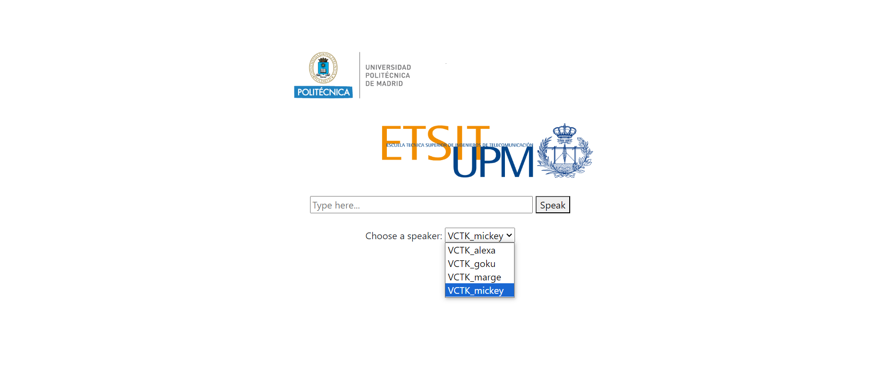

Master's Thesis: Deep Learning Voice Mimic for Alexa
During my time in the Master's in Telecommunications Engineering at UPM, I had the opportunity to research and develop an innovative project in the field of voice-assisted by artificial intelligence. Below, I present a brief introduction about its scope and achievements.
In my Master's Final Project, I proposed creating an application that would allow voice assistants, such as Alexa, Siri, and Cortana, to mimic voices of famous fictional characters, blended with their original synthetic voices. At that time, voice assistants had numerous limitations in modifying different aspects of their synthetic voices, such as speed, pitch, and emotions. However, my project aimed to give them the ability to mimic voices of fictional characters to enrich their interaction with users.
To achieve this, I used deep learning techniques with adversarial neural networks that cloned and modified a synthetic voice using voice samples from various fictional characters. This allowed for the generation of new phrases by making modifications to input texts and the latent representation of the target character's voice. I implemented a methodology for gathering training data, collecting public recordings of fictional characters. This data was later processed to be used by the cloning and blending model. Additionally, I carried out evaluation activities to verify the quality of the generated voice. Finally, I developed an application that lets voice assistant users select from various famous characters, allowing them to use their synthetic voice blended with the chosen fictional character.
